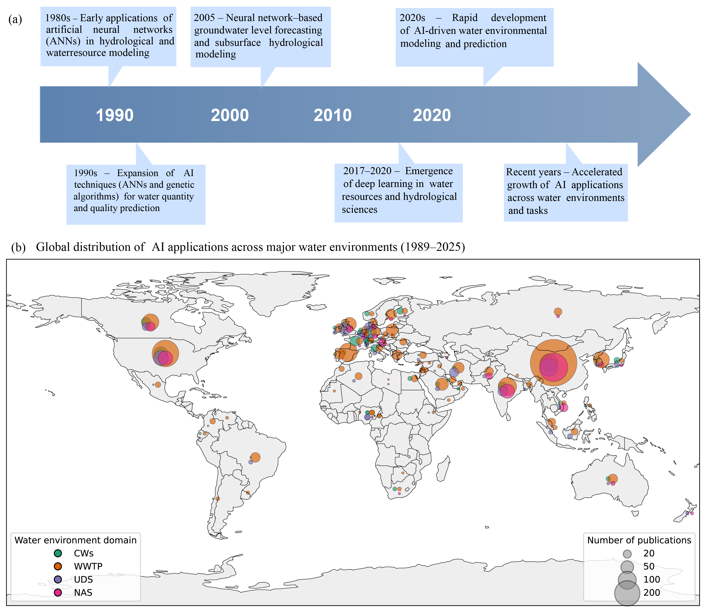
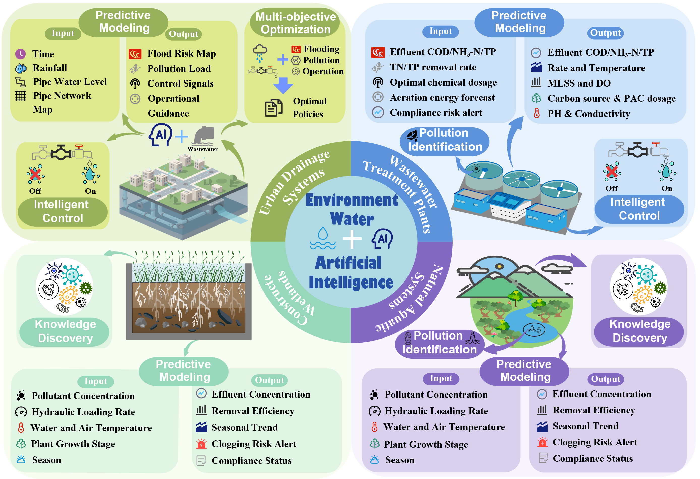
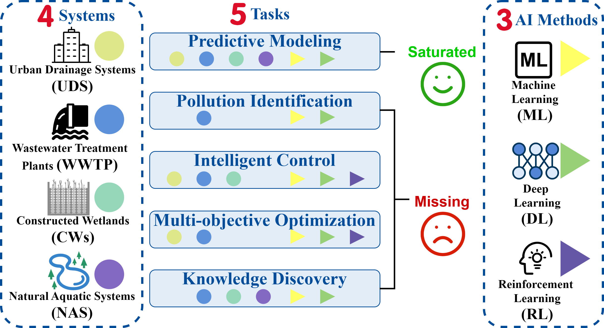

Abstract
Artificial intelligence (AI) has expanded its applications in water environmental systems, including urban drainage systems, wastewater treatment plants, natural aquatic systems, and constructed wetlands. Driven by advances in sensing technologies, the internet of things (IoT), and edge computing, water environmental management is shifting from experience-based practices toward data-driven decisions. Unlike existing reviews that focus on individual tasks or specific application scenarios, this review adopts a system-level perspective to examine AI applications across five core tasks—predictive modeling, pollution identification, intelligent control, multi-objective optimization, and knowledge discovery—within four water environmental systems. Attention is paid to how AI methods are distributed across tasks and system types. Based on a synthesis of literature statistics, this review summarizes the evolution of AI applications from prediction-oriented studies toward approaches emphasizing system control and optimization, and highlights closed-loop control, coordinated multi-objective optimization, and engineering-level edge deployment as key directions for future research.
Background

Color-coded mapping of artificial intelligence tasks across water environmental systems.The figure presents the distribution of five core artificial intelligence tasks across four representative water environmental systems. Colored markers denote task–system associations, with consistent colors indicating the corresponding system in which the task has been investigated. The absence of a colored marker suggests limited or no reported AI applications for that specific task–system combination.
Overview of Water Environmental Systems

Overview of artificial intelligence (AI) applications in water environmental systems.The four surrounding boxes correspond to urban drainage systems, wastewater treatment plants, natural aquatic systems, and constructed wetlands. Within each box, the major AI tasks that have been widely investigated in the corresponding system are summarized, illustrating how different water environmental systems emphasize distinct task combinations.
AI Methods

Color-coded mapping of artificial intelligence tasks across water environmental systems. The figure presents the distribution of five core artificial intelligence tasks across four representative water environmental systems. Colored markers denote task–system associations, with consistent colors indicating the corresponding system in which the task has been investigated. The absence of a colored marker suggests limited or no reported AI applications for that specific task–system combination.

Overview of artificial intelligence (AI) method categories used in water environmental systems. The figure groups existing approaches into three major categories: traditional machine learning, neural network, graph and reinforcement learning. Within each category, representative algorithms commonly adopted in recent studies are illustrated.
BibTeX
@article{YourPaperKey2024,
title={A Survey of AI for Water Environmental Systems},
author={Chun, Yang and Simin, Xu and Kele, Shao and Xihui, Guo and Wei, Zhi and Lingwei, Kong and Ling, Li and Huan, Wang},
journal={},
year={2026},
}